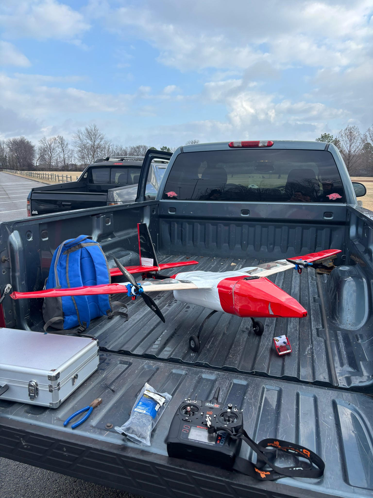

Brandon Hargis
Mechanical Engineer · Aerospace Concentration · EIT Certified
I'm a Mechanical Engineering graduate from the University of Arkansas with a passion for designing and building things that actually work. I enjoy the hands-on side of engineering — whether that's testing a structure to its limits, modeling a system in CAD, or digging into data to figure out why something performed the way it did. With an Aerospace concentration and an EIT certification under my belt, I bring a strong technical foundation paired with real-world experience in design, prototyping, and testing.
Skills
A mix of design, analysis, and hands-on engineering tools built through coursework, competition, and industry experience.
Projects
A collection of engineering projects spanning structural design, fluid systems, and aerospace — each involving real design decisions, hands-on testing, and technical documentation.
Design Build Fly (DBF) — "Soaring Swine" UAV
As part of the University of Arkansas' 14-member Wild Warthogs team, I contributed to the full design, build, and test cycle of a competition radio-controlled aircraft — the Soaring Swine — for the 2024-2025 AIAA Design Build Fly competition. The aircraft was designed to carry external fuel pylons and deploy an autonomous sub-aircraft (the X-1 "Plummeting Piglet") in flight across four scored missions.
My Contributions
- Designed and modeled structural systems in SolidWorks, applying fluid and structural load principles to wing, fuselage, and landing gear components.
- Developed and executed structural test plans using custom-fabricated rigs for both destructive and non-destructive testing.
- Performed static G-load testing, tip-to-tip wing tests, and dynamic drop tests to validate structural integrity under competition loads.
- Collaborated with aerodynamics and propulsion sub-teams to refine designs for durability, manufacturability, and mission compliance.
- Prepared detailed technical documentation and contributed to formal design reviews throughout the project.
Aircraft Overview
The final design was a dual-motor monoplane with a dihedral high-wing, conventional tail, and tail-dragger landing gear — selected through systematic trade studies across wing shape, tail configuration, propulsion, and landing gear. The wing used an FX 76-120 root airfoil optimized for maximum payload lift, with an SG4022 tip airfoil providing aerodynamic twist for improved lift-to-drag performance. The airframe was built using a balsa-carbon rod construction with 3D-printed ABS integration components and laser-cut parts.
Key Engineering Highlights
- Wing optimization: Used XFLR5 and an iterative Excel solver to derive maximum takeoff weight, wing loading, aspect ratio, and neutral point. Aerodynamic twist via tip airfoil change reduced induced drag and improved L/D at all angles of attack.
- Structural analysis: Topological optimization of wing center pieces in nTopology minimized weight while maintaining strength under 2G pylon loads. FEA validated landing gear mounts under 400N normal and shear loads.
- Propulsion system: Dual SunnySky X3120 585KV brushless motors with EOLO 13x7 propellers and 22.2V 6S LiPo batteries. Static thrust testing confirmed 8.38 lbf per motor — 23.6% above the calculated M2 requirement of 6.78 lbf.
- Pylon system: Spring-loaded locking hatch mechanism designed for single-motion engagement to minimize ground mission time. Pylon spanwise position analytically optimized to 47.8% half-span to minimize bending stress across all load cases.
- X-1 sub-aircraft: A 22g flying wing (ASA-CF filament) with bell-shaped lift distribution and static elevons for stable orbital descent — no GPS or servo required, saving over 1.77 oz.
- Manufacturing: CNC laser-cut double-ply cross-grain balsa ribs, 3D-printed ABS structural joints, carbon fiber rod spars, and Ultracote shrink wrap skin.
Testing Results
- Wing held 1G of distributed load with 3.1 in tip deflection — within the 3.5 in allowable limit.
- Motor and ESC temps remained within rated limits (motor: 192.3°F vs. 200°F limit; ESC: 94.7°F vs. 215°F limit) during full-throttle 3-minute heat test simulating Tucson competition conditions.
- V1 Soaring Swine successfully completed first flight on February 6th, 2025 — confirmed stable flight with no stall, validating the aerodynamic design.
- X-1 underwent continuous flight testing from October 2024 through April 2025 with iterative aileron deflection tuning for consistent orbital descent.
Pump & Heat Exchanger Performance Study
Conducted a full experimental study of a centrifugal pump and brazed plate heat exchanger system, applying fundamental fluid mechanics and thermodynamics principles to experimentally determine real-world performance and compare against theoretical predictions. The experiment spanned two major subsystems — a variable-speed pump loop and a configurable plate heat exchanger — with data collected across multiple operating conditions.
Pump Performance Study
The pump was tested at four RPM settings (max, ¾, ½, and ¼ speed) across multiple flow rates to experimentally generate pump curves and system curves, then validated against pump affinity law predictions.
- Calculated pump head using the simplified Bernoulli-based pressure equation, accounting for inlet and outlet pressure gauge readings at each operating point.
- Applied pump affinity laws to predict how head, flow rate, and power scale with RPM changes — then compared predicted values against experimental data at each operating state.
- Calculated pump efficiency at each operating point using measured current, voltage, specific weight, flow rate, and head — finding that efficiency peaked at maximum RPM and maximum flow, consistent with theoretical predictions.
- Affinity law predictions were most accurate at higher flow and RPM settings (2–4% error), with error increasing to 20–40% at quarter-speed settings due to steady-state timing and flow meter variability.
Heat Exchanger Performance Study
The brazed plate heat exchanger was tested in both parallel flow and counter flow configurations at two heater temperatures (60°C and 45°C) and four cold-water flow rates (18, 12, 8, and 4 L/min), with the hot water flow rate held constant throughout.
Parallel Flow
- Tested at 60°C and 45°C heater settings
- Cold water varied from 18 → 4 L/min
- Energy transfer rate decreased as cold flow decreased
- Lower cold flow → higher efficiency (more dwell time)
Counter Flow
- Tested at same conditions as parallel flow
- Counter flow at 60°C, 4 L/min cold water = highest efficiency
- Consistent with manufacturer guidance favoring counter flow
- Results show stronger temperature gradient maintenance
- Calculated energy transfer rates for both hot and cold water sides using Q = ṁCpΔT — ideally these should match; deviations quantified error in the experimental setup.
- Calculated heat exchanger effectiveness using ε = Q/Qmax, where Qmax used the minimum fluid capacity rate and the maximum temperature difference between inlet streams.
- Identified cold-water feed line pressure variability (shared line across all lab stations) as the primary source of error — hot-water energy transfer rate was used for final calculations as the more reliable measurement.
- Authored a complete technical report including abstract, theory, experimental methods, data tables, error analysis, discussion, and conclusions.
Contact Me
I'm actively looking for entry-level mechanical engineering roles. Feel free to reach out — I'd love to connect.
- 📧 Brandonhargiswork@gmail.com
- 📞 (202) 469-4018
- 📍 Fayetteville, AR